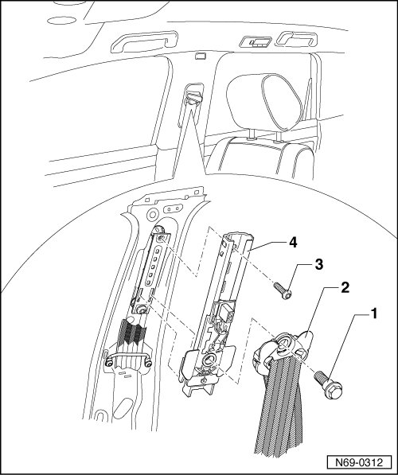

Mechanical Belt Height Adjuster
Mechanical Belt Height Adjuster
• Removal and installation is described for the right-hand side of the vehicle. Removal and installation for the left-hand side is performed in the same manner.
Removing
- Remove B-pillar trim --> [ B-Pillar Trim ] B-Pillar Trim.
- Remove bolt - 1 - (50 Nm) and remove belt relay - 2 - from belt height adjuster.
- Remove bolt - 3 - (4.5 Nm) and separate belt height adjuster - 4 - from mounting in carrier plate.

Installing
- Perform the steps used for removal in reverse order.